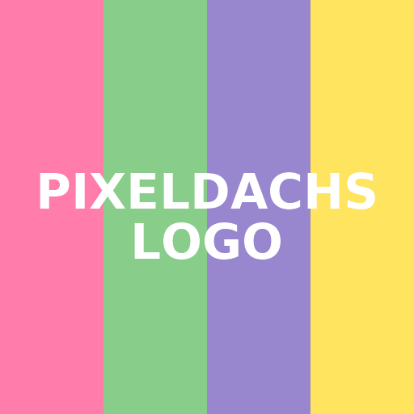

Pixeldachs Post-Maker
v3.6 – Texte · Analyse · Bilder · Kacheln · Overlay · Share
Die vollständige v3.6-Datei wird in dieser Lauf neu generiert – falls diese Kurzdatei erscheint, lade die finale ZIP herunter.